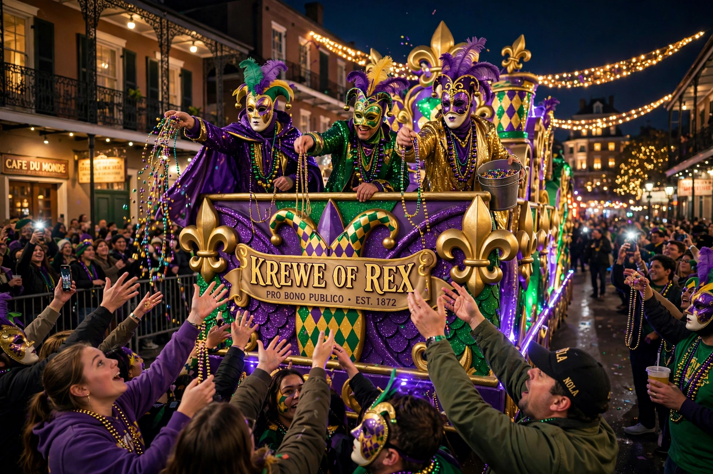

| Krewe | |
|---|---|
| Type | Carnival social organisation |
| Region | Gulf Coast, esp. New Orleans, Louisiana |
| Earliest | Mistick Krewe of Comus (1857) |
| Activities | Parades, balls, throws, charity |
A krewe (pronounced "crew") is a social organisation that stages parades and/or balls for the Carnival season, most famously for Mardi Gras in New Orleans, Louisiana, and in other Gulf Coast cities such as Mobile, Alabama, and in Tampa, Florida's Gasparilla festival. The term is believed to have been coined in the 19th century with an archaic, pseudo-English spelling chosen to lend the organisations an air of antiquity and mystery.
The first modern krewe was the Mistick Krewe of Comus, founded in New Orleans in 1857 by businessmen influenced by Mobile's earlier mystic societies. Comus introduced the themed, illuminated night parade with floats and a tableau ball, transforming Carnival from street revelry into organised spectacle. The Twelfth Night Revelers followed in 1870, and Rex (the "King of Carnival") in 1872, which established traditions such as the official colours of purple, green and gold and the Carnival anthem. The old-line krewes — Comus, Momus, Proteus and Rex — defined the classic form: secret membership, elaborate tableau balls, and monarchs ("kings" and "queens") drawn from their ranks.
Krewes are generally non-profit private clubs funded by member dues. Each stages its own parade with floats built around a theme, led by its captain and royalty, its masked riders throwing trinkets — beads, doubloons, cups and signature items such as the Zulu krewe's hand-painted coconuts and the Krewe of Muses' decorated shoes — to spectators. Twentieth-century "super krewes" such as Bacchus (founded 1968) and Endymion opened membership widely and mounted huge parades with celebrity monarchs. A 1991 New Orleans ordinance required parading krewes to certify that they did not discriminate by race or sex; Comus, Momus and Proteus responded by withdrawing from parading (Proteus later returned), drawing a line between the old secretive guard and the new inclusive era. Krewes also raise funds for charity and hold year-round social events.